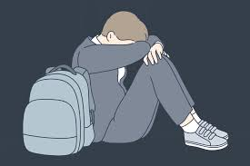

El bullying, también conocido como acoso escolar, es un tipo de violencia que ocurre cuando un estudiante o un grupo de estudiantes acosa a otro de manera repetida. Esta conducta puede incluir agresiones físicas, verbales o psicológicas, y a menudo se manifiesta en forma de intimidación, amenazas, aislamiento social y humillaciones.
Según la definición de la UNICEF, el bullying se caracteriza por un desequilibrio de poder entre la víctima y el agresor. Este fenómeno tiene un impacto negativo significativo en la salud emocional y mental de los involucrados, tanto de las víctimas como de los agresores.
El bullying no solo ocurre en las escuelas; también puede ser un problema en el ámbito laboral, en línea (ciberacoso) o en cualquier entorno social. El acoso no solo se limita a los estudiantes; los adultos también pueden ser víctimas de este tipo de violencia.
